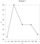
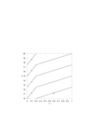
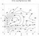
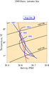
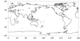
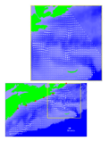
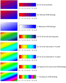
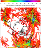
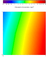
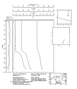

The Recipes
1 Simple xy plot

Also see full-sized graph
and the Gri
code
2 Contour Plot, Pre-gridded Data

Also see full-sized graph
and the Gri
code
3 Contour Plot, Un-gridded Data

Also see full-sized graph
and the Gri
code
4 Salinity Diagram

Also see full-sized graph
and the Gri
code
5 Time-Depth Image Diagram
Also see full-sized graph
and the Gri
code
6 World map

Also see full-sized graph
and the Gri
code
7 Bathymetry Map with Annotation

Also see full-sized graph
and the Gri
code
8 Image Colorscales -- linear graduation

Also see full-sized graph
and the Gri
code
9 Image Colorscales -- nonlinear graduation
Also see full-sized graph
and the Gri
code
10 Image Colorscales -- GEBCO graduation for maps of ocean/land topography
Also see full-sized graph
and the Gri
code
Note: since images are stored in an 8-bit value in Gri, GEBCO
color-coding can match inappropriately to contours, in regions of
steep topography. The range of depths is 5500m (-5000m to 500m), and
with 8 bits this yields a resolution limit of dz=21.5m. Now consider
the color transition near 100m depth. The image colours are
quantized, with 4*dz being 85.9375 and 5*dz being 107.4m, so that the
100m contour cannot possibly run along the colour transition. This is
not a problem if the scale of the chart is large (e.g. the scale of
the North Atlantic Ocean), but problems may arise in maps of the
continental shelf break. In that case, it's best to modify the image
range appropriately, so that it matches the depths more precisely.
Thus, you might realize that no depths above 50m were present, or
below 2000m; therefore the image range would be 2500m, and the
resolution drops to dz=12m, approximately.
11 Geographical map with fancy map projection

Also see full-sized graph
and the Gri
code
This example uses the proj unix command. proj is a
general and very powerful standalone package, not a standard part of
unix. It is available from United States Geological Service via ftp
at
ftp://kai.er.usgs.gov/pub/PROJ.4/PROJ.4.3.3.tar.gz. Other
relevant materials in the PROJ directory
ftp://kai.er.usgs.gov/pub/PROJ.4 include several manuals
on map projections, which detail the development of PROJ. Unofficial
mirror sites for PROJ exist at several locations; a web-search for
PROJ4 will uncover these. Also, the excellent USGS site is worth
perusing, for its own sake.
12 Chlorophyll image with SEAWIFS (logarithmic) palette

Also see full-sized graph,
the Gri
code,
and the palette
RGB file.
To get a palette that runs vertically, as opposed to horizontally,
do as in this snippet of Gri code.
13 Oceanographic CTD display

Also see full-sized graph in PDF format,
the Gri
(BROKEN) code,